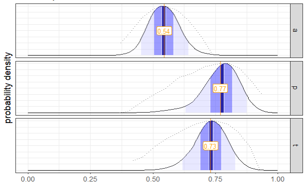

This is a user guide to the tapModel package. It will show you how to format a data set of ratings and fit a t-a-p model to the data. For more about what these models are, see [link].
There are data sets included in the package to use as examples. We’ll use the wine data set. One the tapModel library is loaded, you can access the data set with data(wine).
Code
library(tidyverse)library(tapModel)library(knitr)#' Load the included wine datadata(wine)#' It has rating in columns, one for each wine judge. Each row is a wine.#' We can convert to a standard long format with the `format_data` function.ratings <- tapModel::format_data(wine, data_type ="raters")#' To compute the t-a-p model, we need the counts for each class. This is a #' dataframe with one row per subjec, with two columns:#' N_r, the number of ratings for that subject#' N_c, the number of ratings in class 1 for that subject#' #' If we define Class 1 to be "acceptable" wine, with ratings {2,3,4} vs #' Class 0 = rating 1, we can find the counts withcounts <- tapModel::count_ratings(ratings, c(2,3,4))#' Compute the solutiontap <- tapModel::iterative_optim(counts)#' Show the resultskable(tap, digits =2)
t
a
p
ll
degenerate
0.73
0.54
0.78
-243.36
FALSE
You can also format the data using tidyverse functions without the helpers.
Code
inclass <-2:4# set the range of acceptable ratings# this will work for the data format where each rater has a columncounts <- wine %>%mutate(N_r =rowSums(across(everything(), ~!is.na(.))), N_c =rowSums(across(everything(), ~ . %in% inclass))) |>select(N_r, N_c)counts |>head(5) |>kable()
N_r
N_c
4
5
4
5
4
5
4
4
4
3
2 Ordinal Analysis
In addition to a binary comparison, where we split the range of possible ratings into two sets, we can also use the ordinal analysis. This is where we put the ratings in a sensible order, like “strongly disagree” to “strongly agree” for a common survey response, then consider each cut-point between these values. In the case of the wine ratings, we have:
Wine rating scale
Rating Value
Meaning
1
No medal
2
Bronze medal
3
Silver medal
4
Gold medal
There are three natural cut-points:
1|2 divides the 1 ratings from higher ones
2|3 divides the {1,2} ratings from the {3,4} ratings
3|4 divides the {1,2,3} ratings from the 4 ratings.
Each cut point defines a binary classification system, which we can estimate the t-a-p parameters for.
To use the built-in function for iterating over the cut-points, we need to prepare the data to be in a long format with only two columns SubjectID__ and rating.
Code
#' this will work for the data format where each rater has a columnratings <- wine %>%mutate(SubjectID__ =row_number()) |>gather(judge, rating, -SubjectID__) |>select(SubjectID__, rating)ratings |>head(5) |>kable()
SubjectID__
rating
1
3
2
3
3
3
4
3
5
4
Now we can apply the function to find estimates for the parameters at each cut-point as well as the Fleiss kappa statistics for each.
params |>select(t,a,p,CutPoint, type) |>gather(param, value, t, a, p) |>ggplot(aes(x = CutPoint, y = value, color = type, group = type)) +geom_line() +geom_point() +facet_wrap(. ~ param)
3 Bayesian Models
Bayesian estimation using Monte Carlo Markov Chain (MCMC) estimation methods are flexible in allowing for maximum likelihood estimation over any likelihood function you can imagine. This includes the standard t-a–p three-parameter model, but also includes hierarchical models where each subject is assigned a truth value and each rater is assigned an accuracy estimate. The tapModel package provides some limited interface to the most common of these models using library(cmdstanr). Installing that package entails some setup work. Please see the package documentation to install and test your installation before trying out the code below.
The use of Stan for Bayesian estimation is also included in the package, with an easy interface for three different models:
t-a-p.stan, a three-parameter t-a-p model
t-a0a1-p.stan, a four-parameter model that splits the accuracy parameter into \(a0\) and \(a1\), so that raters can have different accuracies depending on the true classification, and
t-a0a1-p0p1.stan, a five-parameter version that expands the four-parameter version to also include \(p0\) and \(p1\), so the guessing probabilities are also conditional on the true classification.
We can use the counts data frame from the introduction to illustrate.
Code
library(cmdstanr)library(LaplacesDemon) # for the Modes() function#' Get the .stan source code for the chosen modelstan_model_source <-system.file("stan/t-a-p.stan", package ="tapModel")#' Compile it. This can take a while, but you only need to do it once.#' maybe go make a cup of teastan_model <- cmdstanr::cmdstan_model(stan_model_source)#' Use the convenience function to run the MCMC#' This requires counts to be properly formated. model_draws <- tapModel::fit_tap_model(counts, stan_model) #' Summarize the statisticsest_params <- tapModel::get_tap_stats(model_draws)#' Simplify the draw data into a data fram and then#' plot the draw distributionsmodel_draws |> tapModel::extract_vars() |> tapModel::plot_draw_densities()
The get_tap_stats function returns a data frame with the mean and interquartile range of the draws, as well as an attempt to identify bimodal densities, which can indicate a problem with model fit or non-unique solutions.
position
var
avg
p05
p25
median
p75
p95
mode1
mode2
2
a
0.54
0.45
0.50
0.54
0.58
0.64
0.53
0.55
3
p
0.77
0.63
0.73
0.78
0.82
0.88
0.80
NA
4
t
0.73
0.62
0.69
0.73
0.78
0.83
0.73
NA
The plot_draw_densities function will plot the draws for each parameter, with the mean labeled and the interquartile range shaded. The average log likelihood is indicated with a dotted line.

Parameter estimates for t-a-p on wine data with mean labeled and interquartile range shaded. Average log likelihood is indicated with dotted line.